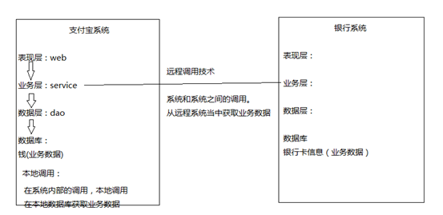
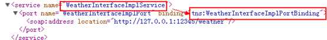
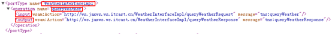
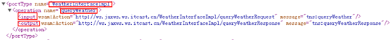
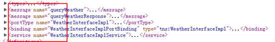
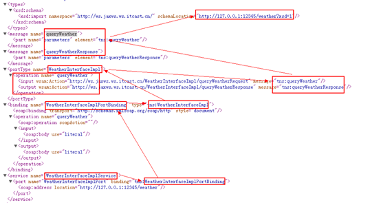

一：
1 什么是webservice
1.1 什么是远程调用技术
远程调用数据定义：是系统和系统之间的调用

Webservice是使用Http发送SOAP协议的数据的一种远程调用技术
Webservice要开发服务端
Webservice要开发客户端
Webservice客户端开发需要阅读服务端的使用说明书（WSDL）
Webservice的优缺点
优点：
l 发送方式采用http的post发送，http的默认端口是80，防火墙默认不拦截80，所以跨防火墙
l 采用XML格式封装数据，XML是跨平台的，所以webservice也可以跨平台。
l Webservice支持面向对象
缺点：
l 采用XML格式封装数据，所以在传输过程中，要传输额外的标签，随着SOAP协议的不断完善，标签越来越大，导致webservice性能下降
二：入门程序
需求
l 服务端：发布一个天气查询服务，接收客户端城市名，返回天气数据给客户端
l 客户端：发送城市名称给服务端，接收服务端的返回天气数据，打印
实现
服务端：
开发步骤：
l 第一步：创建SEI（Service Endpoint Interface）接口，本质上就是Java接口
public interface WeatherInterface {
public String queryWeather(String cityName);
}
第二步：创建SEI实现类，在实现类上加入@WebService
@WebService//@WebService表示该类是一个服务类，需要发布其中的public的方法
public class WeatherInterfaceImpl implements WeatherInterface {
@Override
public String queryWeather(String cityName) {
System.out.println("from client..."+cityName);
String weather = "晴";
return weather;
}
}
l 第三步：发布服务，Endpoint发布服务，publish方法，两个参数：1.服务地址；2.服务实现类
public class WeatherServer {
public static void main(String[] args) {
//Endpoint发布服务
//参数解释
//1.address - 服务地址
//2.implementor - 实现类
Endpoint.publish("http://127.0.0.1:12345/weather", new WeatherInterfaceImpl());
}
}
l 第四步：测试服务是否发布成功，通过阅读使用说明书，确定客户端调用的接口、方法、参数和返回值存在，证明服务发布成功。
WSDL地址：服务地址+”?wsdl”
WSDL阅读方式：从下往上

 

客户端：
开发步骤
l 第一步：wsimport命令生成客户端代码
wsimport -s . http://127.0.0.1:12345/weather?wsdl
l 第二步：根据使用说明书，使用客户端代码调用服务端
Ø 第一步：创建服务视图，视图是从service标签的name属性获取
Ø 第二步：获取服务实现类，实现类从portType的name属性获取
Ø 第三步：获取查询方法，从portType的operation标签获取
public class WeatherClient {
public static void main(String[] args) {
//创建服务视图
WeatherInterfaceImplService weatherInterfaceImplService = new WeatherInterfaceImplService();
//获取服务实现类
WeatherInterfaceImpl weatherInterfaceImpl = weatherInterfaceImplService.getPort(WeatherInterfaceImpl.class);
//调用查询方法，打印
String weather = weatherInterfaceImpl.queryWeather("北京");
System.out.println(weather);
}
}
三：WSDL
WSDL及web服务描述语言，他是webservice服务端使用说明书，说明服务端接口、方法、参数和返回值，WSDL是随服务发布成功，自动生成，无需编写
文档结构：

l
l
l
l
l
阅读从下往上：

四：SOAP
l SOAP即简单对象访问协议，他是使用http发送的XML格式的数据，它可以跨平台，跨防火墙，SOAP不是webservice的专有协议。
l SOAP=http+xml

l 必需有 Envelope 元素，此元素将整个 XML 文档标识为一条 SOAP 消息
l 可选的 Header 元素，包含头部信息
l 必需有Body 元素，包含所有的调用和响应信息
l 可选的 Fault 元素，提供有关在处理此消息所发生错误的信息
五：REST
五：CXF
1：简介
CXF是什么？有什么用？优点
Apache CXF 是一个开源的web Services 框架，CXF 帮助您构建和开发 web Services ，它支持多种协议，支持数据格式：XML，JSON（仅在REST方式下支持）
2：CXF的基础知识
2.1：安装配置
官网下载，解压
环境变量配置


3：CXF与Spring整合发布SAOP与REST项目
3.1 CXF+Spring整合发布SAOP协议服务
3.1.1服务端
开发步骤：
第一步：创建web项目，导入jar包，maven项目添加坐标
maven需三个：cxf-core, cxf-rt-frontend-jaxws,cxf-rt-transports-http-jetty
第二步：创建SEI接口（SEI在webservice中称为portType，在java中称为接口）
1 import javax.jws.WebService;
2 import javax.xml.ws.BindingType;
3 import javax.xml.ws.soap.SOAPBinding;
4
5 /**
6 *
7 * <p>Title: WeatherInterface.java</p>
8 * <p>Description:SEI接口</p>
9 */
10 @WebService
11 @BindingType(SOAPBinding.SOAP12HTTP_BINDING)
12 public interface WeatherInterface {
13
14 public String queryWeather(String cityName);
15
16 }
第三步：创建SEI实现类
1 public class WeatherInterfaceImpl implements WeatherInterface {
2
3 @Override
4 public String queryWeather(String cityName) {
5 System.out.println("from client..."+cityName);
6 if("北京".equals(cityName)){
7 return "冷且霾";
8 } else {
9 return "暖且晴";
10 }
11 }
12
13 }
第四步：配置Spring配置文件beans.xml
用<jaxws:server标签发布服务，设置 1.服务地址； 2.设置服务接口； 3设置服务实现类
1 <?xml version="1.0" encoding="UTF-8"?>
2 <beans xmlns="http://www.springframework.org/schema/beans"
3 xmlns:xsi="http://www.w3.org/2001/XMLSchema-instance" xmlns:jaxws="http://cxf.apache.org/jaxws"
4 xmlns:jaxrs="http://cxf.apache.org/jaxrs" xmlns:cxf="http://cxf.apache.org/core"
5 xsi:schemaLocation="http://www.springframework.org/schema/beans
6 http://www.springframework.org/schema/beans/spring-beans.xsd
7 http://cxf.apache.org/jaxrs http://cxf.apache.org/schemas/jaxrs.xsd
8 http://cxf.apache.org/jaxws http://cxf.apache.org/schemas/jaxws.xsd
9 http://cxf.apache.org/core http://cxf.apache.org/schemas/core.xsd">
10 <!-- <jaxws:endpoint发布SOAP协议的服务 ，对Endpoint类封装-->
11 <jaxws:endpoint address="/hello" implementor="com.xqc.ws.cxf.server.HelloWorld"/>
12
13 <!-- <jaxws:server发布SOAP协议的服务 ，对JaxWsServerFactoryBean类封装-->
14 <jaxws:server address="/weather" serviceClass="com.xqc.ws.cxf.server.WeatherInterface">
15 <jaxws:serviceBean>
16 <ref bean="weatherInterface"/>
17 </jaxws:serviceBean>
18
19 <!-- 配置拦截器 -->
20 <jaxws:inInterceptors>
21 <ref bean="inIntercepter"/>
22 </jaxws:inInterceptors>
23 <jaxws:outInterceptors>
24 <ref bean="outIntercepter"/>
25 </jaxws:outInterceptors>
26 </jaxws:server>
27 <!-- 配置拦截器的bean -->
28 <bean name="inIntercepter" class="org.apache.cxf.interceptor.LoggingInInterceptor"/>
29 <bean name="outIntercepter" class="org.apache.cxf.interceptor.LoggingOutInterceptor"/>
30
31 <!-- 配置服务实现类 -->
32 <bean name="weatherInterface" class="com.xqc.ws.cxf.server.WeatherInterfaceImpl"/>
33 </beans>
第五步：配置Web.xml
1 <?xml version="1.0" encoding="UTF-8"?>
2 <web-app xmlns:xsi="http://www.w3.org/2001/XMLSchema-instance" xmlns="http://java.sun.com/xml/ns/javaee" xsi:schemaLocation="http://java.sun.com/xml/ns/javaee http://java.sun.com/xml/ns/javaee/web-app_3_0.xsd" id="WebApp_ID" version="3.0">
3 <display-name>ws_2_cxf_spring_server</display-name>
4
5 <!-- 设置spring的环境 ,加载spring配置文件 -->
6 <context-param>
7 <!--contextConfigLocation是不能修改的 -->
8 <param-name>contextConfigLocation</param-name>
9 <param-value>classpath:beans.xml</param-value>
10 </context-param>
11 <listener>
12 <listener-class>org.springframework.web.context.ContextLoaderListener</listener-class>
13 </listener>
14
15 <!-- 配置CXF的Servlet -->
16 <servlet>
17 <servlet-name>CXF</servlet-name>
18 <servlet-class>org.apache.cxf.transport.servlet.CXFServlet</servlet-class>
19 </servlet>
20 <servlet-mapping>
21 <servlet-name>CXF</servlet-name>
22 <url-pattern>/ws/*</url-pattern>
23 </servlet-mapping>
24
25 <welcome-file-list>
26 <welcome-file>index.html</welcome-file>
27 <welcome-file>index.htm</welcome-file>
28 <welcome-file>index.jsp</welcome-file>
29 <welcome-file>default.html</welcome-file>
30 <welcome-file>default.htm</welcome-file>
31 <welcome-file>default.jsp</welcome-file>
32 </welcome-file-list>
33 </web-app>
第六步：部署到tomact下，启动tomact
第七步：测试服务
浏览器输入：WSDL地址规则：http://ip:端口号/项目名称/servlet拦截路径/服务名称?wsdl
第八步：Endpoint标签发布服务
添加文件
1 @WebService
2 public class HelloWorld {
3 public String sayHello(String name){
4 return "hello,"+name;
5 }
6
7 }
在beans中添加配置
1 <!-- <jaxws:endpoint发布SOAP协议的服务 ，对Endpoint类封装-->
2 <jaxws:endpoint address="/hello" implementor="com.xqc.ws.cxf.server.HelloWorld"/>
访问：http://ip:端口号/项目名称/servlet拦截路径/ 例如：http://localhost:8080/ws_2_cxf_spring_server/ws/
3.1.2 客户端（近写一个javase的客户端演示一下，客户端可以很多）
开发步骤：
第一步：引入jar包
第二步：生成客户端代码
第三步：配置spring配置文件，applicationContent.xml
<?xml version="1.0" encoding="UTF-8"?>
<beans xmlns="http://www.springframework.org/schema/beans"
xmlns:xsi="http://www.w3.org/2001/XMLSchema-instance" xmlns:jaxws="http://cxf.apache.org/jaxws"
xmlns:jaxrs="http://cxf.apache.org/jaxrs" xmlns:cxf="http://cxf.apache.org/core"
xsi:schemaLocation="http://www.springframework.org/schema/beans
http://www.springframework.org/schema/beans/spring-beans.xsd
http://cxf.apache.org/jaxrs http://cxf.apache.org/schemas/jaxrs.xsd
http://cxf.apache.org/jaxws http://cxf.apache.org/schemas/jaxws.xsd
http://cxf.apache.org/core http://cxf.apache.org/schemas/core.xsd">
<!-- <jaxws:client实现客户端 ，对JaxWsProxyFactoryBean类封装-->
<jaxws:client id="weatherClient" address="http://127.0.0.1:8080/ws_2_cxf_spring_server/ws/weather" serviceClass="com.xqc.cxf.weather.WeatherInterface"/>
</beans>
第四步：从spring上下文件获取服务实现类
第五步：调用查询方法，打印
1 package com.xqc.cxf.client;
2
3 import org.springframework.context.ApplicationContext;
4 import org.springframework.context.support.ClassPathXmlApplicationContext;
5
6 import com.xqc.cxf.weather.WeatherInterface;
7
8 public class WeatherClient {
9
10 public static void main(String[] args) {
11 //初始化spring的上下文
12 ApplicationContext context = new ClassPathXmlApplicationContext("classpath:beans.xml");
13 WeatherInterface weatherInterface = (WeatherInterface) context.getBean("weatherClient");
14 String weather = weatherInterface.queryWeather("保定");
15 System.out.println(weather);
16 }
17 }
3.2CXF+Spring整合发布REST服务
3.2.1服务端
开发步骤：
第一步：导入jar包
第二步：创建学生pojo类，要加入@ XmlRootElement
1 package com.xqc.ws.rest.pojo;
2
3 import java.util.Date;
4
5 import javax.xml.bind.annotation.XmlRootElement;
6
7 /**
8 *
9 * <p>Title: Student.java</p>
10 * <p>Description:学生实体类</p>
11 */
12 @XmlRootElement(name="student")//@XmlRootElement可以实现对象和XML数据之间的转换
13 public class Student {
14
15 private long id;
16
17 private String name;
18
19 private Date birthday;
20
21 public long getId() {
22 return id;
23 }
24
25 public void setId(long id) {
26 this.id = id;
27 }
28
29 public String getName() {
30 return name;
31 }
32
33 public void setName(String name) {
34 this.name = name;
35 }
36
37 public Date getBirthday() {
38 return birthday;
39 }
40
41 public void setBirthday(Date birthday) {
42 this.birthday = birthday;
43 }
44
45 }
第三步：创建SEI接口
1 package com.xqc.ws.rest.server;
2
3 import java.util.List;
4 import javax.jws.WebService;
5 import javax.ws.rs.GET;
6 import javax.ws.rs.Path;
7 import javax.ws.rs.PathParam;
8 import javax.ws.rs.Produces;
9 import javax.ws.rs.core.MediaType;
10
11 import com.xqc.ws.rest.pojo.Student;
12
13 /**
14 *
15 * <p>Title: StudentInterface.java</p>
16 * <p>Description:学生接口</p>
17 */
18 @WebService
19 @Path("/student")//@Path("/student")就是将请求路径中的“/student”映射到接口上
20 public interface StudentInterface {
21
22 //查询单个学生
23 @GET//指定请求方式，如果服务端发布的时候指定的是GET（POST），那么客户端访问时必须使用GET（POST）
24 @Produces(MediaType.APPLICATION_XML)//指定服务数据类型
25 @Path("/query/{id}")//@Path("/query/{id}")就是将“/query”映射到方法上，“{id}”映射到参数上，多个参数，以“/”隔开，放到“{}”中
26 public Student query(@PathParam("id")long id);
27
28 //查询多个学生
29 @GET//指定请求方式，如果服务端发布的时候指定的是GET（POST），那么客户端访问时必须使用GET（POST）
30 @Produces("application/json;charset=utf-8")//指定服务数据类型
31 @Path("/queryList/{name}")//@Path("/queryList/{name}")就是将“/queryList”映射到方法上，“{name}”映射到参数上，多个参数，以“/”隔开，放到“{}”中
32 public List<Student> queryList(@PathParam("name")String name);
33
34 }
第四步：创建SEI实现类
1 package com.xqc.ws.rest.server;
2
3 import java.util.ArrayList;
4 import java.util.Date;
5 import java.util.List;
6
7 import com.xqc.ws.rest.pojo.Student;
8
9 /**
10 *
11 * <p>Title: StudentInterfaceImpl.java</p>
12 * <p>Description:学生的实现类</p>
13 */
14 public class StudentInterfaceImpl implements StudentInterface {
15
16 @Override
17 public Student query(long id) {
18 Student st = new Student();
19 st.setId(110);
20 st.setName("张三");
21 st.setBirthday(new Date());
22 return st;
23 }
24
25 @Override
26 public List<Student> queryList(String name) {
27
28 Student st = new Student();
29 st.setId(110);
30 st.setName("张三");
31 st.setBirthday(new Date());
32
33 Student st2 = new Student();
34 st2.setId(120);
35 st2.setName("李四");
36 st2.setBirthday(new Date());
37
38 List<Student> list = new ArrayList<Student>();
39 list.add(st);
40 list.add(st2);
41 return list;
42 }
43
44 }
第五步：
配置Spring配置文件,beans.xml，<jaxrs:server，设置1.服务地址；2.服务实现类
1 <?xml version="1.0" encoding="UTF-8"?>
2 <beans xmlns="http://www.springframework.org/schema/beans"
3 xmlns:xsi="http://www.w3.org/2001/XMLSchema-instance" xmlns:jaxws="http://cxf.apache.org/jaxws"
4 xmlns:jaxrs="http://cxf.apache.org/jaxrs" xmlns:cxf="http://cxf.apache.org/core"
5 xsi:schemaLocation="http://www.springframework.org/schema/beans
6 http://www.springframework.org/schema/beans/spring-beans.xsd
7 http://cxf.apache.org/jaxrs http://cxf.apache.org/schemas/jaxrs.xsd
8 http://cxf.apache.org/jaxws http://cxf.apache.org/schemas/jaxws.xsd
9 http://cxf.apache.org/core http://cxf.apache.org/schemas/core.xsd">
10 <!-- <jaxrs:server发布REST的服务 ，对JAXRSServerFactoryBean类封装-->
11 <jaxrs:server address="/user">
12 <jaxrs:serviceBeans>
13 <ref bean="studentInterface"/>
14 </jaxrs:serviceBeans>
15 </jaxrs:server>
16
17 <!-- 配置服务实现类 -->
18 <bean name="studentInterface" class="com.xqc.ws.rest.server.StudentInterfaceImpl"/>
19 </beans>
第六步：配置web.xml
<?xml version="1.0" encoding="UTF-8"?>
<web-app xmlns:xsi="http://www.w3.org/2001/XMLSchema-instance" xmlns="http://java.sun.com/xml/ns/javaee" xsi:schemaLocation="http://java.sun.com/xml/ns/javaee http://java.sun.com/xml/ns/javaee/web-app_3_0.xsd" id="WebApp_ID" version="3.0">
<display-name>ws_2_cxf_spring_server</display-name>
<!-- 设置spring的环境 -->
<context-param>
<!--contextConfigLocation是不能修改的 -->
<param-name>contextConfigLocation</param-name>
<param-value>classpath:applicationContext.xml</param-value>
</context-param>
<listener>
<listener-class>org.springframework.web.context.ContextLoaderListener</listener-class>
</listener>
<!-- 配置CXF的Servlet -->
<servlet>
<servlet-name>CXF</servlet-name>
<servlet-class>org.apache.cxf.transport.servlet.CXFServlet</servlet-class>
</servlet>
<servlet-mapping>
<servlet-name>CXF</servlet-name>
<url-pattern>/ws/*</url-pattern>
</servlet-mapping>
<welcome-file-list>
<welcome-file>index.html</welcome-file>
<welcome-file>index.htm</welcome-file>
<welcome-file>index.jsp</welcome-file>
<welcome-file>default.html</welcome-file>
<welcome-file>default.htm</welcome-file>
<welcome-file>default.jsp</welcome-file>
</welcome-file-list>
</web-app>
第七步：部署到tomcat下，启动tomcat
第八步：测试服务
REST服务的使用说明书地址：
http://127.0.0.1:8080/ws_4_cxf_rest_spring_server/ws/user?_wadl
http://127.0.0.1:8080/ws_4_cxf_rest_spring_server/ws/user/student/query/110 查询单个学生，返回XML数据
1 <student>
2 <birthday>2015-11-27T15:22:14.240+08:00</birthday>
3 <id>110</id>
4 <name>张三</name>
5 </student>
http://127.0.0.1:8080/ws_4_cxf_rest_spring_server/ws/user//student/queryList/110?_type=json 查询多个学生，返回JSON
{"student":[{"birthday":"2015-11-27T15:24:21.565+08:00","id":110,"name":"张三"},{"birthday":"2015-11-27T15:24:21.565+08:00","id":120,"name":"李四"}]}
3.2.2:客户端：因为返回的直接就是数据，其实直接解析就可以，DOM4J解析
直接用新建html然后使用Ajax使用即可